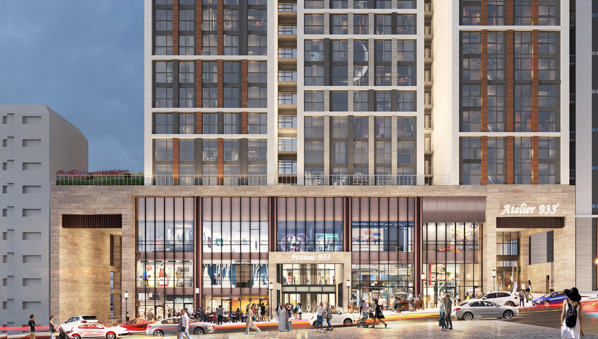
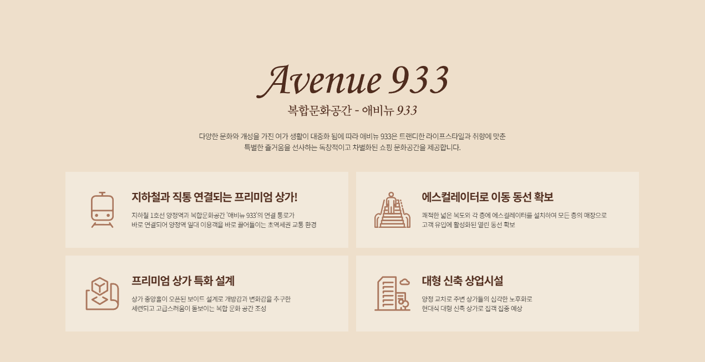

지하철 1호선과 상업시설을 잇는 접근 동선
COMMERCIAL · MEDICAL INFRASTRUCTURE
부산진구 상가 분양,
병원 인프라 좋은 곳
상가분양은 단순히 유동인구가 많은 곳을 고르는 일이 아닙니다.
메디컬 업종이라면 접근성, 배후수요, 주차, 공간 설비와 병원 인프라를 함께 봐야 합니다.
주거·행정·오피스·교육 수요가 겹치는 생활권
제공 자료 기준 주차 260대 및 2시간 무료 안내
병원·의원 진료과목과 호실 조건을 함께 확인
BUSANJINGU COMMERCIAL & MEDICAL GUIDE
부산진구 상가분양,
메디컬 업종이라면 보는 기준이 달라야 합니다.
부산진구 상가분양을 알아볼 때 분양가와 전용면적만 비교하기 쉽지만, 병원·의원과 같은 메디컬 업종은 환자가 실제로 찾아오기 편한지까지 확인해야 합니다. 부산진구 메디컬 상권을 검토한다면 대중교통, 주거 배후, 행정·오피스 수요, 주차와 건물 내부 동선이 함께 작동하는지를 살펴보는 것이 중요합니다.
부산진구 상가분양, 유동인구보다 생활권부터 봐야 합니다
상가의 가치는 지나가는 사람이 많다는 이유만으로 결정되지 않습니다. 실제 소비와 방문이 반복되는 생활권인지, 평일과 주말의 수요가 어떻게 다른지, 주변 주거와 업무시설이 어떤 형태로 배치되어 있는지를 함께 봐야 합니다.
양정 생활권은 주거시설뿐 아니라 부산시청·교육청 등 행정기관, 오피스와 교육시설이 함께 모여 있어 여러 유형의 방문 수요가 겹치는 구조를 살펴볼 수 있습니다. 따라서 부산진구 상가분양을 장기적인 관점에서 검토한다면 단일 업종 중심 상권인지보다 주변 생활 인프라가 얼마나 폭넓게 형성되어 있는지 확인하는 것이 좋습니다.

※ 본 사이트 내에 사용된 이미지는 소비자의 이해를 돕기 위해 참고용으로 제작된 것으로 실제 시공 시 다를 수 있습니다.
부산진구 메디컬 상권은 ‘반복 방문’ 가능성을 봐야 합니다
부산진구 메디컬 상가를 찾는 경우 일반 판매점과 다른 기준이 필요합니다. 병원과 의원은 초진 이후에도 재진, 검사, 치료 등으로 반복 방문이 발생할 수 있기 때문에 환자가 여러 번 찾아와도 불편하지 않은 접근성이 중요합니다.
지하철과 건물이 연결되거나 역에서의 보행 동선이 단순하면 대중교통 이용 환자에게 도움이 될 수 있습니다. 여기에 주거 배후와 직장인 수요가 함께 존재하면 특정 시간대에만 의존하지 않는 상권 구조를 검토할 수 있습니다.
SUBWAY양정역 직통 연결
지하철 1호선 양정역에서 상업시설로 이어지는 이동 동선을 확인할 수 있습니다.
RESIDENTIAL약 6만여 세대 생활권
제공된 안내 자료에는 양정 상권 내 약 6만여 세대 주거 배후가 언급되어 있습니다.
OFFICE행정·오피스 수요
행정타운을 포함한 약 5만3천 명 규모의 오피스 인구가 안내되어 있습니다.
부산진구 병원 인프라가 좋은 곳은 무엇이 다를까요?
부산진구 병원 입지에서 중요한 것은 주변에 의료기관이 있다는 사실만이 아닙니다. 약국, 주차, 대중교통, 보호자 대기와 이동 편의, 식음·생활편의시설 등 진료 전후의 동선까지 함께 연결되는지가 중요합니다.
특히 소아청소년과·내과처럼 생활권 기반 수요가 중요한 진료과와 정형외과·치과처럼 자동차 방문이나 반복 치료 비중이 높은 진료과는 서로 다른 입지 조건을 요구할 수 있습니다. 따라서 주변 인프라를 단순 개수보다 ‘환자가 실제로 이용하기 쉬운 구조인가’라는 관점에서 보는 것이 좋습니다.

메디컬 상가는 주차·공간·설비 조건을 함께 확인해야 합니다
같은 평수의 상가라도 병원에 적합한 공간은 따로 있습니다. 진료실과 대기실을 분리할 수 있는지, 장비 반입이 가능한지, 전기 용량과 급배수·환기·소방 조건이 예정 진료과목에 맞는지 확인해야 합니다.
제공된 안내 자료에는 AVENUE 933 주차공간 260대와 2시간 무료 주차 조건이 기재되어 있습니다. 자동차 방문 비중이 높은 진료과라면 주차대수뿐 아니라 주차장에서 엘리베이터, 에스컬레이터, 실제 호실까지의 동선도 함께 확인하는 것이 좋습니다.
부산진구 메디컬 상가 확인 체크리스트
- 건축물 용도상 의료기관 개설 가능 여부
- 전기·급배수·환기·소방 등 진료과별 설비 조건
- 환자와 보호자가 이동하기 쉬운 엘리베이터·에스컬레이터 동선
- 주차대수와 무료주차 조건, 주차장에서 호실까지의 이동 편의
- 간판 노출과 초진 환자가 찾기 쉬운 안내 동선
AVENUE 933에서 부산진구 메디컬 상가를 검토한다면
현재 제공된 자료에서는 내과, 소아청소년과, 피부과, 정형외과, 치과, 한의원, 이비인후과 등이 추천 진료과목으로 제시되어 있습니다. 또한 임대·분양 조건과 렌트프리 기간은 개별 상담을 통해 확인할 수 있도록 안내되어 있습니다.
다만 추천 진료과목이라고 해서 모든 호실이 동일하게 적합한 것은 아닙니다. 실제 부산진구 상가분양 또는 임대를 결정하기 전에는 전용면적, 층 위치, 설비, 간판 노출, 주차와 의료기관 개설 가능 여부를 호실별로 확인하는 것이 좋습니다.
내과소아청소년과피부과정형외과치과한의원이비인후과
부산진구 상가분양·메디컬 상가 자주 묻는 질문
부산진구에서 병원·의원 입점을 목적으로 상가를 검토할 때 자주 확인하는 내용을 정리했습니다.
부산진구 상가분양을 볼 때 병원 인프라는 왜 중요한가요?
메디컬 업종은 반복 방문과 보호자 동반 수요가 발생할 수 있어 대중교통, 주차, 주변 주거·오피스 수요와 기존 의료기관 분포를 함께 살펴보는 것이 좋습니다.
부산진구 메디컬 상가를 고를 때 가장 먼저 확인할 것은 무엇인가요?
예정 진료과목에 필요한 면적과 전기·급배수·환기·소방 조건, 의료기관 개설 가능 여부, 엘리베이터와 주차장 동선을 먼저 확인하는 것이 좋습니다.
부산진구 병원 입지에서 역세권이 중요한 이유는 무엇인가요?
초진뿐 아니라 재진 환자가 반복적으로 방문할 수 있기 때문에 대중교통 접근성과 건물 내부 이동 동선은 환자 편의에 직접적인 영향을 줄 수 있습니다.
상가분양 전에 주차 조건도 꼭 확인해야 하나요?
자동차 방문 비중이 높은 진료과나 보호자 동반 수요가 많은 업종이라면 주차대수, 무료주차 조건, 주차장에서 호실까지의 이동 동선을 함께 확인하는 것이 좋습니다.
AVENUE 933에서 어떤 메디컬 업종을 검토할 수 있나요?
제공된 안내 자료에는 내과, 소아청소년과, 피부과, 정형외과, 치과, 한의원, 이비인후과 등이 추천 진료과목으로 제시되어 있습니다. 실제 입점 가능 여부와 조건은 호실별 확인이 필요합니다.
MEDICAL COMMERCIAL
부산진구 상가분양과
부산진구 상가분양과
메디컬 입지를 함께 확인하세요.
- 분양·임대 조건 개별 상담
- 메디컬 업종 호실 조건 확인
- 주차·동선·설비 안내
- 렌트프리 조건 협의 안내
※ 분양·임대·주차·렌트프리·입점 업종 등 세부 조건은 시점과 계약 조건에 따라 달라질 수 있으므로 실제 상담 및 계약 시 최종 내용을 반드시 확인하시기 바랍니다.
AVENUE 933 MEDICAL COMMERCIAL
부산진구 메디컬 상가,
전화 상담하기
부산진구 메디컬 상가,
호실 조건부터 확인해보세요.
희망 진료과목과 필요한 면적을 알려주시면 현재 확인 가능한 분양·임대 조건을 안내해드립니다.